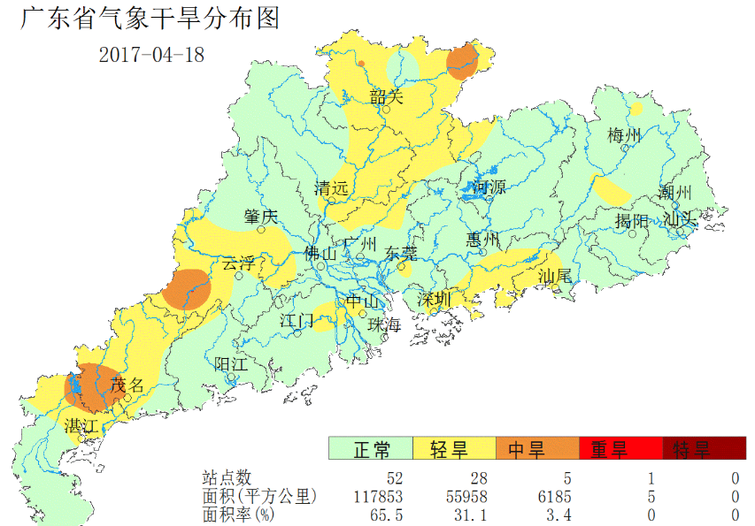
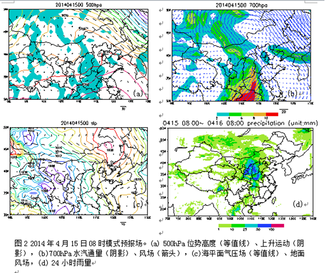

人影作业过程预报和作业计划
201X年第 X期
广东省人工影响天气中心 201X年XX月XX日XX时
一、作业需求分析
2017年4月8日全省干旱监测图如下（图1）：全省共计出现轻旱28处、中旱5处、重旱一处。
图1 全省干旱监测图
二、作业过程预报
天气形势分析：500百帕：今晚到8日，我省处于副高西部的不稳定场中，9日，有高空槽加强东移至四川贵州一带，我省西部地区受其分裂的短波槽影响。850百帕：今晚，南海北部有弱的季风槽活动，明天白天，我省受偏南气流影响；8日到9日，我省大部受南到西南风气流影响，其中北部湾有季风槽活动，对我省西部偏西地区有影响。地面：未来3天，我省东部偏东地区受副高脊控制，其余地区受低压槽影响。 天气趋势预测：今晚到明天，南部地区有中到大雨局部暴雨，中部地区有中阵雨局部暴雨，北部地区有雷阵雨；8日，西南部地区有中到大雨局部暴雨，其余地区有雷阵雨；9日，西部地区有中雨局部暴雨，其余地区有雷阵雨。
备注：预报配图1：ECMWF—细网格 500hpa形势
预报配图2：ECMWF—细网格 700hpa相对湿度和风场
预报配图3：ECMWF—细网格 海平面气压
预报配图3：ECMWF—细网格 24小时降水预报
三、作业计划
地面作业计划：计划于2016年9月28日12时-29日12时，根据云层条件，选择合适时段在台风影响区域的梅州、河源、惠州、清远开展人工影响降水落区试验。请梅州市丰顺县附城镇八角塘441423042、河源市龙川县老隆镇新观测场441622043、惠州市博罗县罗阳镇承粮陂村441322042、清远市英德锦潭水库441881050，4个作业点做好准备，每个作业点备弹20枚。
备注：模板内容，可由值班人员手动修改